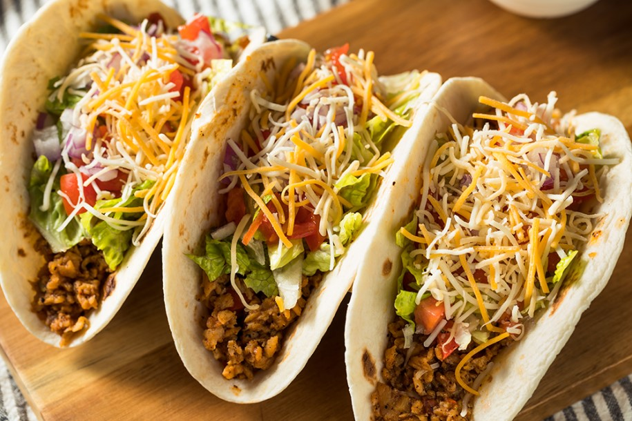

Tacos

Ground Beef Tacos on Soft Shell Tortillas
Ground Beef seasoned with taco seasoning, on a soft-shell tortilla, topped with cheese, lettuce, tomato, and hot sauce.
Ingredients
- Ground beef (1lb)
- Taco seasoning mix (2 packets) (You may use reduced sodium packets)
- 1 cup water
- 1 cup shredded cheese
- 1/2 cup diced tomato
- 1/2 cup lettuce
- Hot sauce to preference
- 4-12 tortillas (depends on size of tortilla)
Steps
-
Heat pan to medium heat.
-
Put ground beef in pan and break it up to cover the whole surface of the pan.
-
Stir frequently. Allow to cook until completely browned, no pink left at all.
-
Drain the grease into sink while running hot water.
-
Stir in water and seasoning. Reduce heat to low-medium and simmer for 5-10 minutes.
-
Put meat in tortilla. Scoop toppings on top with a spoon. Hot sauce to preference.